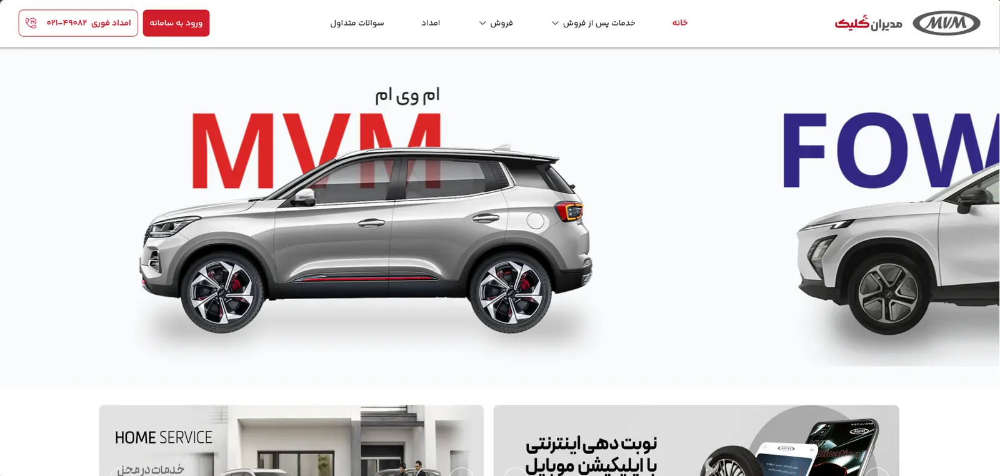
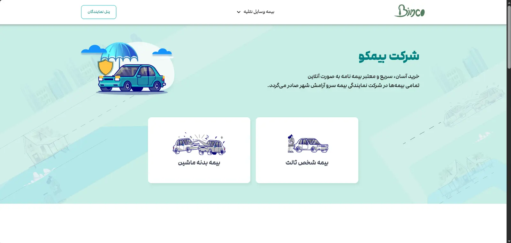
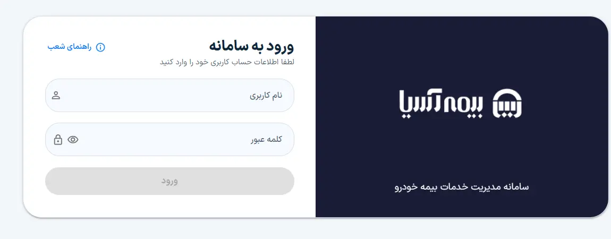
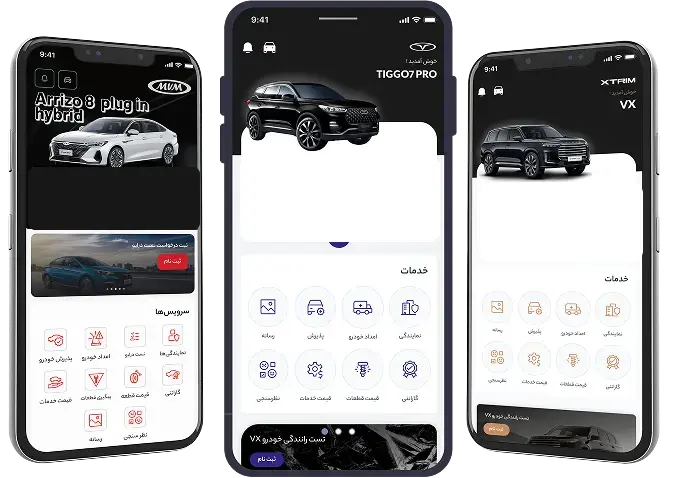
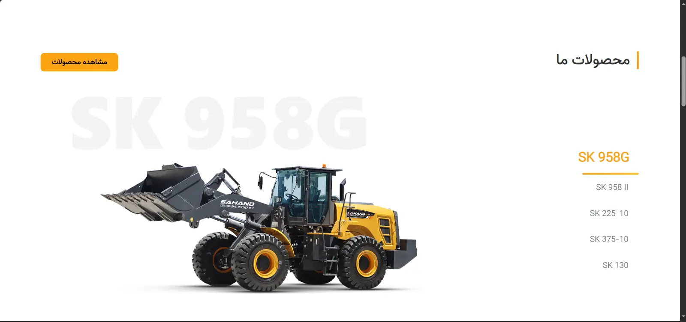
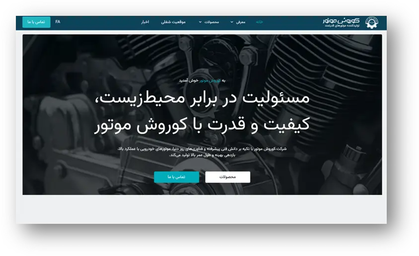
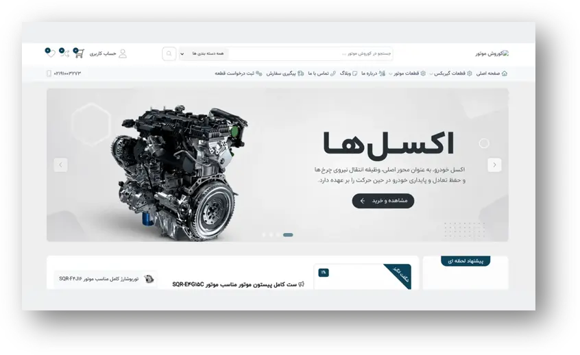
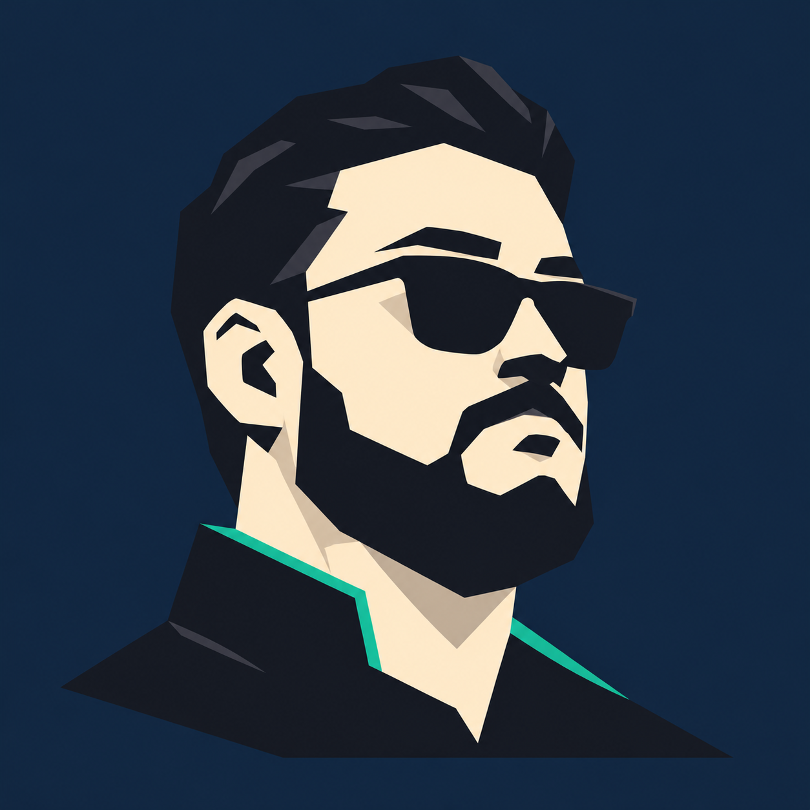

01 / PRODUCT
کشف و راهبری محصول
از شناخت مسئله و مدلکردن فرایند تا اولویتبندی، نوشتن یوزر استوری و هماهنگی انتشار، مسیر محصول رو به کارهای قابل اجرا تبدیل میکنم.
جواد ابراهیمی / مدیر محصول
از پیدا کردن مسئله تا وقتی که نتیجه رو توی رفتار آدمها و عددها ببینیم، پای کارم.
PRODUCT / PEOPLE / PROGRESS ✳
سلام، من جوادم.
وقتی با یه مسئله روبهرو میشم، دوست دارم اول بفهمم واقعا از کجا میاد. با آدمها حرف میزنم، فرایند رو از نزدیک بررسی میکنم و سراغ دادهها و لاگها میرم تا راهحل مناسبتری پیدا کنم.
از مهندسی کامپیوتر دانشگاه تهران و تجربه بازاریابی به مدیریت محصول رسیدم؛ جایی که میشه هم به آدمها نزدیک بود، هم رفت زیر پوست سیستمها.
برای من، مسئولیت نتیجه از شناخت بیزینس و هدفش شروع میشه. دوست دارم در تصمیمهای استراتژیک نقش داشته باشم و با اختیار متناسب، مسیر رسیدن به هدف رو طراحی کنم و تا نتیجه دنبالش باشم.
بیشتر از طرز فکرم ↗چند زاویه، یک مسیر
من جنرالیستم؛ دوست دارم هم از بیزینس و تجربه کاربر سر دربیارم، هم با تیم فنی همزبان باشم و هر جا لازم بود خودم هم دستبهکار بشم.
از شناخت مسئله و مدلکردن فرایند تا اولویتبندی، نوشتن یوزر استوری و هماهنگی انتشار، مسیر محصول رو به کارهای قابل اجرا تبدیل میکنم.
با فیگما فلو و وایرفریم میسازم و کنار تیم طراحی، مسیر کاربر رو از ایده تا تجربه قابل استفاده پیش میبرم.
با کوئری، تحلیل قیف و داشبورد دنبال نشونهها میگردم؛ اینکه کاربر کجا گیر کرده و بعد از هر تغییر چه اتفاقی افتاده.
کمی کد میزنم، API رو با Postman تست میکنم، لاگها رو میخونم و با مفاهیم DevOps و Kubernetes هم آشنایی دارم.
از مذاکره و گوش دادن تا مدیریت ذینفعها و هممسیر کردن تیمهای محصول، فنی و بیزینس، دنبال ساختن فهم مشترک و رسیدن به تصمیمم. مدیریت تیم رو هم تجربه کردم.
پرامپت مینویسم، ابزارهای AI رو در مسیر تحقیق، ایدهپردازی و نمونهسازی هدایت میکنم و خروجیها رو ارزیابی و اصلاح میکنم.
برای من جنرالیست بودن یعنی بلد باشم بین تخصصها پل بزنم.
اینها چند تا از مسیرهاییه که کنار تیمها و کسبوکارها ساختم؛ با مسئلهها، تصمیمها و نتیجههای واقعیشون.

از یک پورتال خدماتی تا سکویی برای مشتری و شرکای تجاری.
مدیران کلیک رو وقتی تحویل گرفتم که بیشتر با خدمات پس از فروش شناخته میشد. کنار تیم، مسیر ریبرندینگ و توسعه پلتفرمی رو پیش بردیم که برای فروش، بیمه و همکاری با شرکای تجاری مدیران خودرو هم جا داشته باشه.
با تحقیق روی تجربه کاربری و سادهتر کردن ثبتنام و احراز هویت، به کاربران تازهثبتنامشده کمک کردیم راحتتر درخواستشون رو ثبت کنن؛ نرخ موفقیت این مسیر از ۶۵٪ به ۹۲٪ رسید.
برای پرداخت اولیه بعد از قرعهکشی هم امکان تقسیم حواله به مبلغهای کوچکتر رو اضافه کردیم تا مشتری بتونه از چند حساب پرداخت کنه. نرخ موفقیت پرداخت از ۷۰٪ به ۸۶٪ رسید.
دیدن وبسایت ↗

برای بهتر شدن یک فرایند، اول باید وسط همون کار ایستاد.
قبل از ساخت بکآفیس، وارد دل سازمان شدم و با مدیرها و کارشناسها حرف زدم تا بفهمم کارها واقعا چطور پیش میرن. با کمک خودشون فرایند ثبت تا صدور رو طراحی و پیاده کردیم.
قطعی اینترنت و جنگ ۱۲روزه هم ادامه کار در شرایط اختلال رو به بخشی از مسئله تبدیل کرده بود. نتیجه بازطراحی فرایند، کاهش زمان ثبت تا صدور از میانگین یک ساعت به ۱۰ دقیقه بود.
بعد از بکآفیس، بیمکو رو برای جذب سرنخ ساختیم و قدم بعدی، فروش مستقیم بیمه در مدیران کلیک بود؛ سه بخش از یک مسیر، با مسئلههای متفاوت.
دیدن بیمکو ↗
سه برند، تجربه امروز؛ قدم اول برای خودروی متصل.
اپلیکیشنهای MVM، Fownix و XTRIM راه دسترسی مشتریها به خدمات هستن. من نیازهای B2C رو در کنار تیمهای مختلف پیش میبردم و حواسم به تجربه مشتری در هر سه برند بود.
در کنار اون، شروع پروژه اینترنت خودرو (IoV) رو دنبال کردم؛ با تامینکنندههای چینی به انگلیسی در ارتباط بودم و در بخشی از هماهنگیها از سمت کارفرما نقش داشتم.

پنجشنبه خبر رسید قطعی اینترنت، ارتباط سایت با سرورش رو از بین برده؛ درست وقتی قرار بود فروش شنبه باز بشه. جمعه کنار تیم، زیرساخت و روش استقرار رو تغییر دادیم تا سایت برای شروع فروش آماده باشه.
دیدن وبسایت ↗

نیاز این پروژه به اندازهای پیچیده نبود که توسعه اختصاصی و صرف منابع تیم توجیه داشته باشه. بهجای درگیر کردن تیم توسعه با هزینه بیشتر، با یک تامینکننده بیرونی و وردپرس راهحلی متناسب با نیاز ساختیم.
بزرگترین چیزی که از ساختن استارتاپم یاد گرفتم، تفکر لین بود: فرضیهها رو زود آزمایش کنم، از داده و بازخورد یاد بگیرم و بر اساسش قدم بعدی رو بردارم.
معمولا پشت یک درخواست ساده، چند تا داستان پیچیده خوابیده. کار من از پرسیدن، دیدن و پیدا کردن مسئله اصلی شروع میشه.
وقتی بیش از ۱۰ بیزینس، تیمهای مختلف و فرایندهایی از کارخانه تا فروش کنار هم قرار میگیرن، تصمیم خوب نیاز به دیدن تصویر بزرگ داره.
برای من موفقیت رو انتشار اعلام نمیکنه؛ رفتار کاربر و عددها نشونش میدن. از API و لاگ گرفته تا داشبورد، هر سرنخی کمک میکنه بهتر تصمیم بگیریم.
سبز شدن داشبورد، یه حس دیگه داره. ✳
دنبال یه مدیر محصول برای تیمت هستی یا پروژهای داری که میخوای دربارهش حرف بزنیم؟ خوشحال میشم ازت بشنوم.

من میخوام محصول بسازم؛ عنوان شغلی برام قابل مذاکرهست.